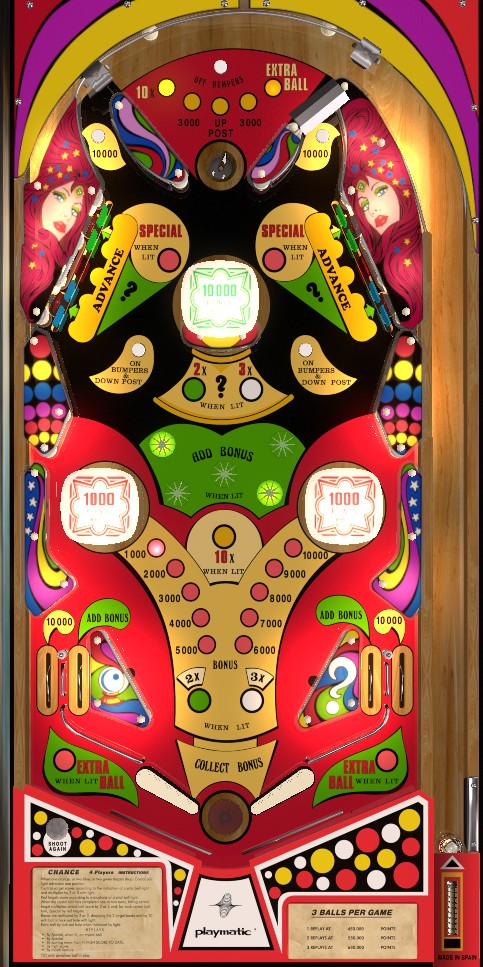

This is a solid state game, and not to be confused with Playmatic's 1974 EM game also called Chance.
The most important part of the score on Chance is the end of ball bonus. Always try to get 10x bonus from the top saucer; the top saucer award scans automatically until a switch it hit, and after that, it is only rotated by the wall switches that funnel the ball into the top saucer. You can shoot up either side of the funnel to try again if you miss. Once 10x bonus is ready, turn it into 20x or 30x by completing one or both banks of drop targets, and advance base bonus at the in lanes or any flashing center star rollover. The center Change target changes value based on drops completion; ignore it until after bonus is truly maxed.
The below picture of Chance's playfield was taken from the VPX recreation by JPSalas and Pedator.

The top saucer scores whichever value is lit. There are 5 possible values: 10x bonus, 3,000 points, Up Post, 3,000 points, and Extra Ball. At the beginning of each ball, the top saucer award automatically scans between the 5 values. Once any switch has been made anywhere on the playfield, the top saucer will stop scanning, and the lit award can only be changed by hitting one of the 100-point wall switches that funnel the ball toward the saucer. 10x bonus is by far the most important award to earn. If you already have 10x bonus, try for Up Post if the center post is not raised; if you have both, any award is fine. The top funnel can be re-accessed by shooting up either side of it, which also scores 10,000 points. The rollover button above the saucer turns the lower bumpers off, if they are lit.
There are 5-banks of drop targets in the upper left and upper right. Knocking down a drop target scores 0 points on its own. Each bank has 2 blue, 1 orange, and 2 green drop targets. Completing a single colour in either bank advances the Chance Value shown on the backglass. Completing a bank at any time resets that bank. Completing either bank once awards 2x bonus, and completing both banks at least once on a ball awards 3x bonus. This 2x or 3x bonus award compounds with the 10x bonus earned at the top saucer, for a potential maximum bonus multiplier of 30x.
The center standup target scores the Chance value. Each player starts with their chance value at 500 points with no multiplier, and the Chance value itself is preserved from ball to ball. Completing a single colour in either bank of drop targets advances the Chance value once. The Chance value is shown on the backglass and progresses in the following order:
Collecting the Special or advancing past it resets the sequence to 500 points, but increases the multiplier applied to the Chance value, first to 2x, then to its maximum of 3x. The multiplier applies to all values of the Chance target except for Mistery- including Special, making it possible to earn multiple free games in a single shot. Advancing the Chance value past Special also resets both banks of drop targets no matter where they stand, and lights the standup targets behind the green drop targets for a Special. Collecting this Special on either side unlights both of them.
The center pop bumper scores 10,000 points and seems to be always lit. The game flyer indicates that a game setting allows this pop bumper to score just 1,000 points instead.
The center post completely blocks off the center flipper gap when raised. To raise the post, make the top saucer when the selected award is Up Post.
The rollover buttons on either side of the center pop bumper light the lower pop bumpers if they are unlit, and lower the center post if it is raised. The lower bumpers always score 100 points or 1,000 when lit, and this cannot be changed. If the bumpers are on, the top rollover button above the top saucer unlights them.
At any given time, 1 or 2 of the 5 star rollovers in the center of the game will be flashing. Unlit star rollovers score 100 points. Lit star rollovers score 100 points and a bonus advance, then change which rollovers are lit. The pattern goes top left and bottom right -> top right and bottom left -> center -> repeat.
Chance has a conventional in/out lane setup. In lanes score 500 points and a bonus advance. Out lanes score 10,000 points, and are lit alternately for extra ball if the top saucer was made while Extra Ball was lit. Maximum 1 extra ball per ball in play. Extra ball works as an extended play feature: if you drain down an out lane where extra ball is lit, your bonus is not scored or resetand play continues with a new plunged ball. There is a center post between the flippers: see above.
Base bonus is advanced by in lanes or flashing center star rollovers. Bonus multiplier is advanced to 2x or 3x by completing one or both drop target banks on a ball. A 10x compound multiplier can be earned by making the top saucer when 10x is lit. Max bonus is 3x 10x 10,000 = 300,000 points. There is no mid-ball bonus collect, nor is there any way to hold any part of the bonus from one ball to the next.